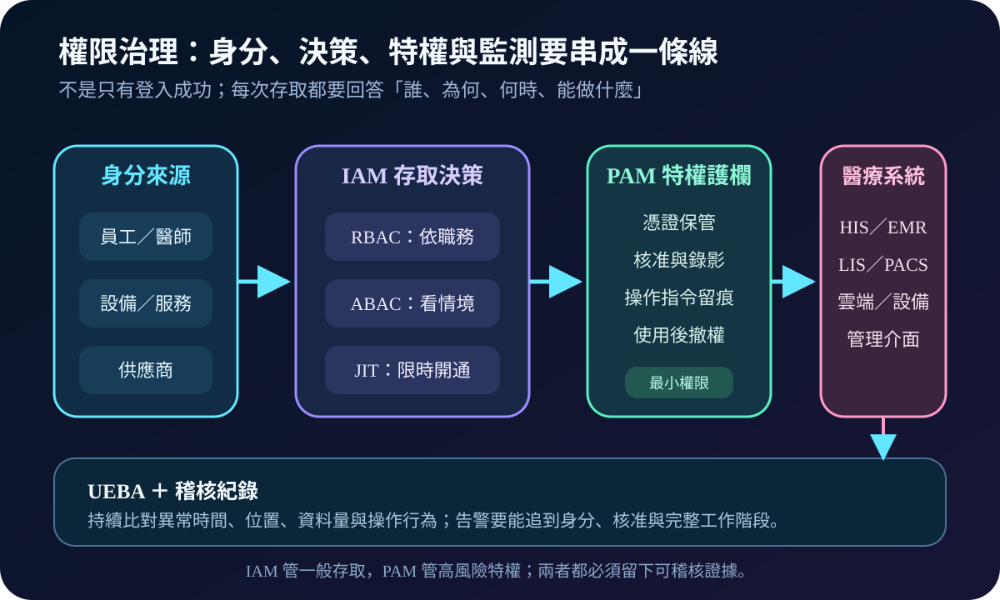
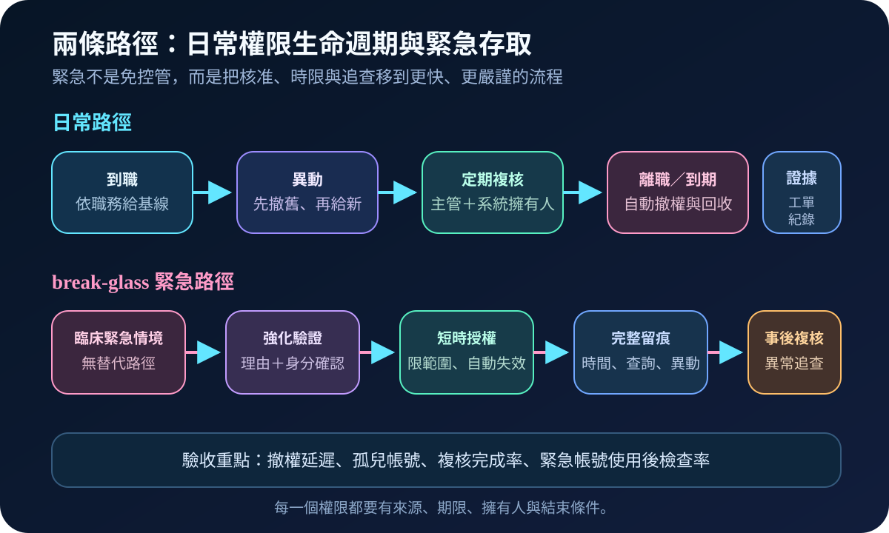
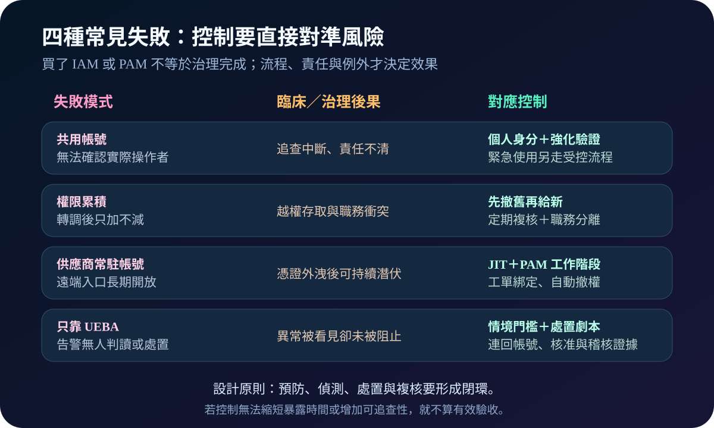

健康台灣深耕計畫-資安治理 · 2026-08-16
醫療權限如何避免「有帳號就能通行」：IAM、PAM 與緊急存取治理
作者：Dr. William｜醫療資訊與資安治理實務工作者
這項能力要解決的是：即使帳號合法，也不能讓不必要、過期或無法追查的存取一路通行。我認為，權限治理的成果不是帳號清單，而是每次存取都有理由、範圍、期限、擁有人與可驗證的結束條件。
名詞解釋：IAM 決定能不能進，PAM 管高風險操作
IAM（Identity and Access Management）管理身分與一般存取；PAM（Privileged Access Management）保護系統管理、資料庫與遠端維護等特權。RBAC依角色配權，ABAC再加入地點、時間、裝置與照護關係等情境；JIT只在需要時短暫開權。最小權限限制必要範圍，職務分離避免一人同時申請、核准與執行。UEBA分析異常行為，但它是偵測層，不能取代前端授權。
規劃：從臨床工作與高風險路徑開始
我會先盤點員工、醫師、設備服務帳號、供應商與介接程式，再以臨床工作內容建立角色基線，標出大量查詢、病歷匯出、系統設定及遠端維護等高風險動作。權責至少包含人資、部門主管、系統擁有人、資安與供應商管理。驗收不只看 MFA 啟用率，也看離職撤權延遲、孤兒帳號、定期複核完成率、特權工作階段覆蓋率及緊急帳號事後檢查率。

實作：先把撤權與特權工作階段做完整
- 建立身分主檔：帳號連回真實人員或明確服務擁有人，停用無主、重複與長期未用帳號。
- 重整角色：用實際工作建立 RBAC 基線，對敏感動作加上 ABAC 條件與職務分離。
- 收斂特權：取消共享管理帳號，將供應商與管理者納入 PAM，以工單核准、JIT、憑證輪替、錄影及自動撤權管理。
- 設計 break-glass：臨床緊急時可快速取得必要權限，但需強化驗證、填寫理由、限制範圍、完整記錄並在使用後複核。我的建議是先選一套核心系統驗證完整閉環，再逐步擴大。
風險：工具上線不代表權限會自己變乾淨
常見失敗包括共用帳號破壞可追查性、轉調後權限只加不減、供應商帳號永久開放，以及 UEBA 告警無人處置。我的判讀是：若緊急流程太慢，臨床端可能繞過控制；若角色切得太細，維護負擔又會失控。因此應以高風險動作優先，保留可用的緊急路徑，並用定期複核與到期機制清理例外。

可執行清單
- 每個人員、設備、服務與供應商帳號是否都有擁有人及到期條件？
- 轉調是否先撤舊權限，離職是否能在約定時間內停用？
- 管理者與遠端維護是否經 PAM、JIT、核准與完整留痕？
- break-glass 是否可快速使用，又能自動失效與事後複核？
- UEBA 告警是否能連回身分、核准紀錄及明確處置劇本？
結語
我認為成熟的權限治理，不是把所有人擋在門外，而是讓必要的人在必要情境下取得剛好的權限，完成後立即收回，發生異常時也能還原完整責任鏈。
內容說明
本文依健康台灣深耕計畫相關治理內容整理，並加入我的實務判讀與執行框架；不取代主管機關正式公告、法律意見或個別醫院風險評估。